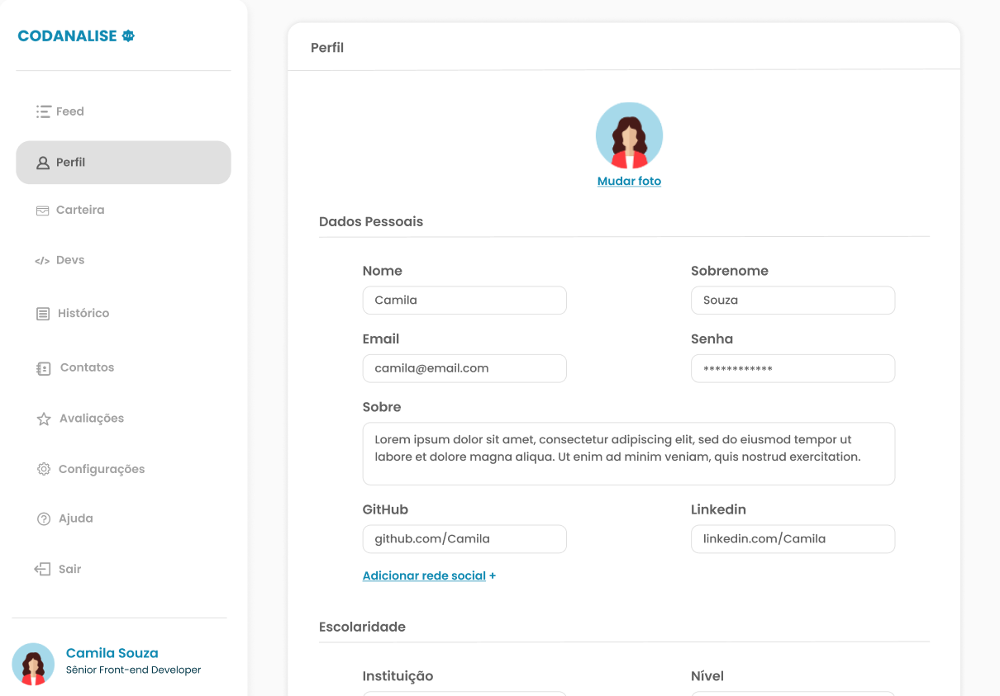
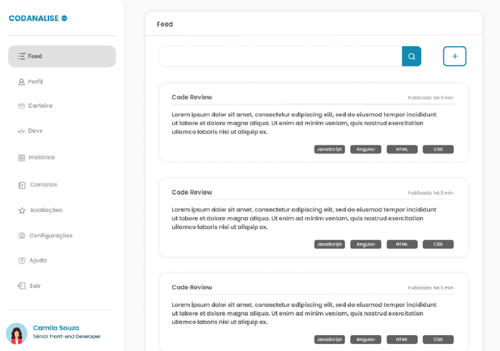

Inscreva-se, faça conexões, publique seu problema e encontre Devs dispostos a te ajudar.
Como Funciona

Mantenha sempre seu perfil atualizado para outros devs saberem um pouco sobre você e em casos de realizar alguma proposta o dev responsável pela publicação irá lhe avaliar. Com o perfil atualizado mais chances de sua proposta ser escolhida.

Na página “Feed”, você poderá realizar publicações relatando o problema que está te impedindo de evoluir, irá receber comentários e propostas de profissionais com experiência dispostos a te ajudar. Interagindo com outras publicações você aumentará seu networking.